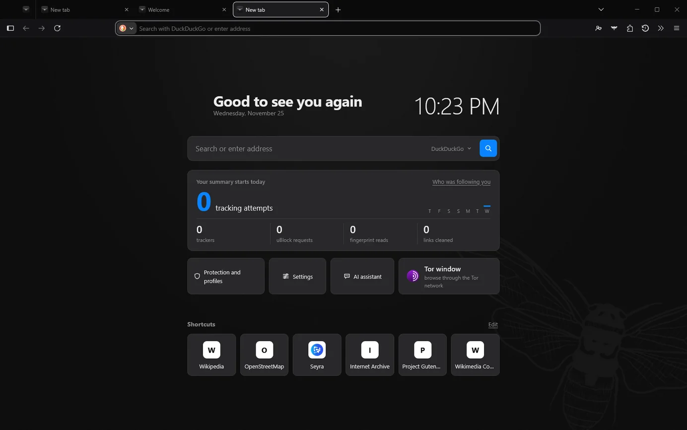
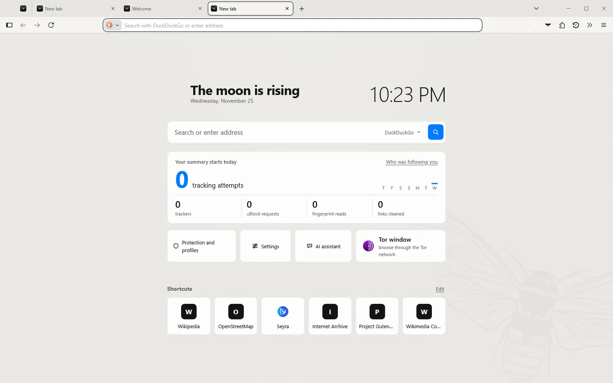
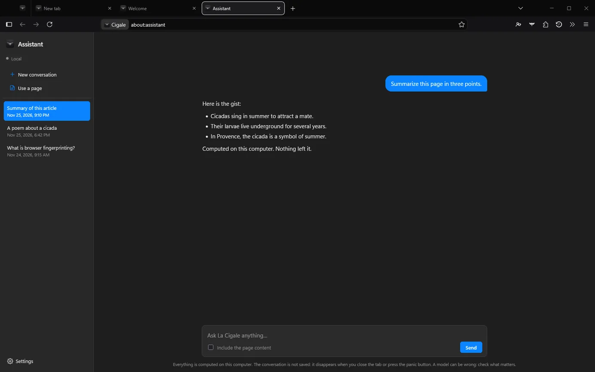

La Cigale
The browser that keeps your data quiet.
No phone version: La Cigale installs on a computer.

Firefox ESR tuned for privacy, free and open source. Nothing is sent to anyone, and everything is erased when you close it.
From the first launch
Protected, nothing to set up.
What La Cigale does without being asked.
No telemetry
No reports, no studies, no ads in new tabs. The matching programs are removed from the package.
Built-in uBlock Origin
Trackers, ads and cookie banners blocked from the start.
Anti-fingerprinting
Tor Browser's settings.
Encrypted DNS
Through Quad9, not your ISP.
IP address hidden
Tor window or your proxies.
Nothing stays
Cookies, history and cache erased on close, except for the sites you keep.
Bring your things
Bookmarks, history and passwords imported from Chrome, Edge or Firefox.
Dark, light and olive themes
Clean like a Mac. Provençal at heart.

Protection
Everything is on. Out of the box.
The Protection page shows the state of every defence, like System Settings. Three profiles, Comfort, Standard or Hardened, and nothing to configure to get started.
AI assistant
An AI that stays at home.
It runs entirely on your computer. No account, no server: your questions go nowhere.

The engine and model are downloaded once, when you ask (2.5 to 5 GB).
New in 1.8.3
Switch browsers, lose nothing.
Import from another browser
Bookmarks, history and passwords from Chrome, Edge or Firefox, from Settings, "Import browser data".
Passwords, if you want them
Off by default. When on, they are encrypted with a primary password: without it, La Cigale saves nothing.
The shields
What no other browser brings together.
Everything is computed on your computer. None of these shields sends anything to a service.
New identity
One click: everything erased, tabs closed, proxy switched.
One proxy per site
Each site sees its own IP address, always the same.
Lookalike detector
paypa1.com, Cyrillic letters: a warning before you type anything.
Form shield
Your password never leaves unencrypted, or towards another site, without your say.
Verified downloads
The published SHA-256 checksum is compared with the file received.
Unknown site mode
JavaScript off on sites you haven't trusted yet.
Link via Tor
Right-click a link: it opens in the Tor window, carrying nothing along.
Ephemeral tabs
They close by themselves when you forget them, and the site is erased with them.
Work, Personal, Bank profiles
Three separate worlds, each with its colour and cookies.
Seyra panel
Your encrypted messenger beside the page.
Page report
Trackers, fingerprinting, third-party sites: all one click on the cicada.
Clean shared links
Copying a link strips the trackers.

Download La Cigale.
Free and open source. Version 1.8.3, based on Firefox ESR 153.
Windows
Windows 10 and 11, 64-bit. The installer offers French or English.
macOS
In French. Not signed with an Apple developer account: on first launch, right-click the app, then "Open".
“No one shall be subjected to arbitrary interference with his privacy, family, home or correspondence.”